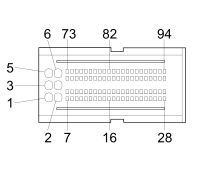

M010A ENGINE MANAGEMENT ECU (INJECTION BRAID / ENGINE SERVICES)
- Path
- Electrical equipment > 3 CONNECTORS > M INTERMITTENT AND TIMED ELECTRONIC DEVICES,.. > M010 ENGINE MANAGEMENT ECU > M010A ENGINE MANAGEMENT ECU (INJECTION BRAID / ENGINE SERVICES)
- Kind
- connector pinout (pin -> wire colour -> other end)
- Applies to
- engines: 1.3 JTD 16V; production: da 12/03; only with equipment: MY 2005
- Interactive page
- https://sloeber94.github.io/elrnDB-fDbl/en/#/223005126
Applies to: engines: 1.3 JTD 16V; production: da 12/03; only with equipment: MY 2005

Wiring | Colour |
|---|---|
NERO (black) |
Pin | Cable | Destination | |||
|---|---|---|---|---|---|
Sec.. | Colour | Node | Connect. | Pin | |
1 | 2,5 | N (black) | X | 1 | |
See M015A PLUG PREHEATING CONTROL UNIT (INJECTION BRAID / ENGINE SERVICES) | 1 | ||||
See M010A ENGINE MANAGEMENT ECU (INJECTION BRAID / ENGINE SERVICES) | 2 | ||||
See M010A ENGINE MANAGEMENT ECU (INJECTION BRAID / ENGINE SERVICES) | 3 | ||||
11 | |||||
4 | |||||
2 | 2,5 | N (black) | X | 1 | |
See M015A PLUG PREHEATING CONTROL UNIT (INJECTION BRAID / ENGINE SERVICES) | 1 | ||||
See M010A ENGINE MANAGEMENT ECU (INJECTION BRAID / ENGINE SERVICES) | 1 | ||||
See M010A ENGINE MANAGEMENT ECU (INJECTION BRAID / ENGINE SERVICES) | 3 | ||||
11 | |||||
4 | |||||
3 | 2,5 | N (black) | X | 1 | |
See M015A PLUG PREHEATING CONTROL UNIT (INJECTION BRAID / ENGINE SERVICES) | 1 | ||||
See M010A ENGINE MANAGEMENT ECU (INJECTION BRAID / ENGINE SERVICES) | 1 | ||||
See M010A ENGINE MANAGEMENT ECU (INJECTION BRAID / ENGINE SERVICES) | 2 | ||||
11 | |||||
4 | |||||
4 | 2,5 | L (blue) | X | 18 | |
See M010A ENGINE MANAGEMENT ECU (INJECTION BRAID / ENGINE SERVICES) | 8 | ||||
5 | 1 | H (grey) | 32 | ||
6 | 2,5 | L (blue) | X | 18 | |
See M010A ENGINE MANAGEMENT ECU (INJECTION BRAID / ENGINE SERVICES) | 4 | ||||
7 | 0,5 | G (yellow) | 28 | ||
8 | 0,5 | HN (grey with black stripe) | X | 21 | |
1 | |||||
12 | 0,75 | CR (orange with red stripe) | 3 | ||
13 | 0,5 | BV (white with green stripe) | 9 | ||
15 | 0,5 | HL (grey with blue stripe) | B | ||
23 | 0,5 | LB (blue with white stripe) | 9 | ||
26 | 0,5 | H (grey) | J | ||
27 | 0,5 | V (green) | I | ||
28 | 0,5 | ZN (violet with black stripe) | H | ||
32 | 0,5 | NZ (black with violet stripe) | C | ||
35 | 0,5 | MB (brown with white stripe) | I | ||
41 | 0,5 | MN (brown with black stripe) | H | ||
44 | 0,5 | HG (grey with yellow stripe) | 4 | ||
45 | 0,5 | HR (grey with red stripe) | 2 | ||
46 | 0,5 | NB (black with white stripe) | 6 | ||
47 | 0,5 | RB (red with white stripe) | 1 | ||
50 | 0,5 | CB (orange with white stripe) | X | 23 | |
10 | |||||
2 | |||||
58 | 0,5 | VG (green with yellow stripe) | D | ||
59 | 0,5 | LG (blue with yellow stripe) | E | ||
61 | 0,5 | VN (green with black stripe) | 8 | ||
65 | 0,5 | BN (white with black stripe) | J | ||
68 | 0,5 | M (brown) | E | ||
70 | 0,5 | VB (green with white stripe) | See M015A PLUG PREHEATING CONTROL UNIT (INJECTION BRAID / ENGINE SERVICES) | 5 | |
74 | 0,5 | ZB (violet with white stripe) | See M015A PLUG PREHEATING CONTROL UNIT (INJECTION BRAID / ENGINE SERVICES) | 2 | |
79 | 0,5 | LV (blue with green stripe) | 5 | ||
80 | 0,5 | Z (violet) | 12 | ||
83 | 0,5 | HV (grey with green stripe) | D | ||
85 | 0,5 | BC (white with orange stripe) | 29 | ||
88 | 0,5 | BR (white with red stripe) | C | ||
90 | 0,5 | LV (blue with green stripe) | 10 | ||
92 | 0,5 | MG (brown with yellow stripe) | K | ||
93 | 0,5 | HB (grey with white stripe) | A | ||
Topics linked from this page (10)
- 51 INJECTION BRIDGE / ENGINE SERVICES
- B001F JUNCTION UNIT (INJECTION BRAID / ENGINE SERVICES)
- C001A BATTERY EARTH (INJECTION BRAID / ENGINE SERVICES)
- D004A FRONT/ENGINE JUNCTION (FRONT)
- D004B FRONT/ENGINE JUNCTION (FRONT)
- D028 ENGINE CABLES/RADIATOR CABLE COUPLING
- D029 ENGINE CABLES/ENGINE SERVICES CABLE COUPLING
- K040 LAMBDA SENSOR
- M010A ENGINE MANAGEMENT ECU (INJECTION BRAID / ENGINE SERVICES)
- M015A PLUG PREHEATING CONTROL UNIT (INJECTION BRAID / ENGINE SERVICES)